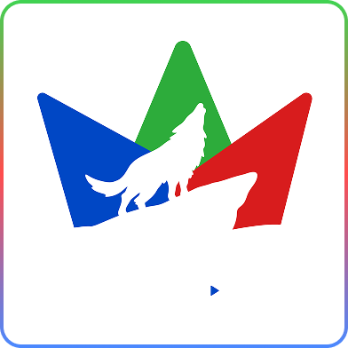

Hardworking
Kami bekerja keras tanpa kompromi. Setiap tantangan adalah kesempatan untuk membuktikan diri dan melampaui batasan.

Discipline
Konsistensi adalah kunci. Kami menjaga standar dan komitmen dalam setiap langkah yang kami ambil.
- OUR
CORE VALUES

Kami peduli satu sama lain. Hunter Community adalah keluarga yang saling mendukung, menginspirasi, dan mengangkat satu sama lain untuk tumbuh bersama.